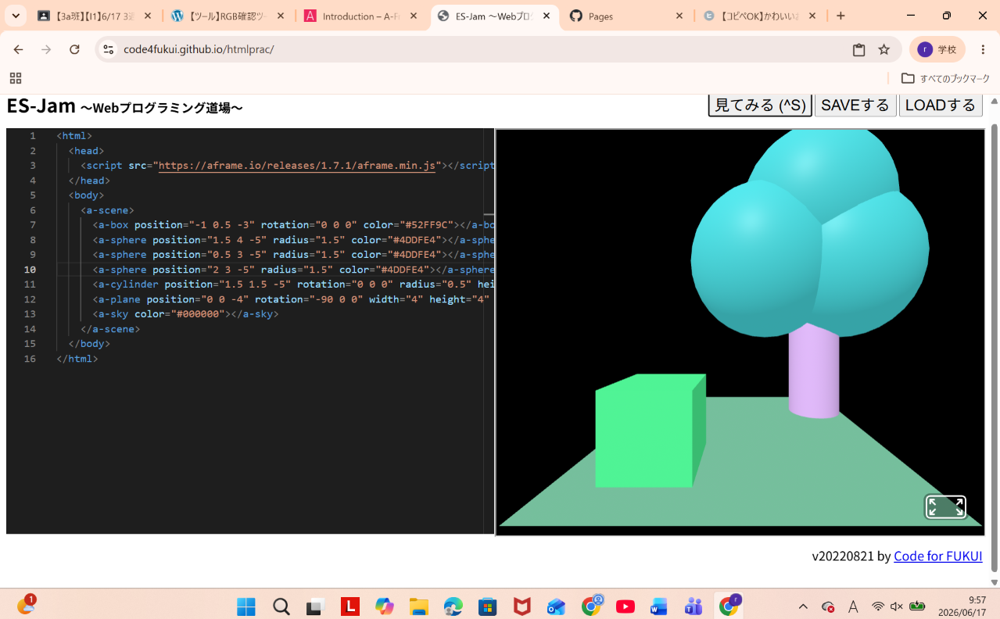

3-1 JavaScript体験：VR空間を作る

自作した３次元空間
1.内容
position、rotationをX、Y、Zでモノの位置や角度を決めて、radius、heightでモノの半径や、高さを決め、
colorでカラーコードを打ってモノの色を決めるプログラムを作成した。
2.感想
X、Y、Z、のどれをどう動かしたら、自分の置きたい場所に置けるのかを考えるのが、とても難しかった。
少し数値を変えただけでも、自分の想像より大きく動いてしまったりしたときに前の数値からおおよその一の推測をするのが面白かった。